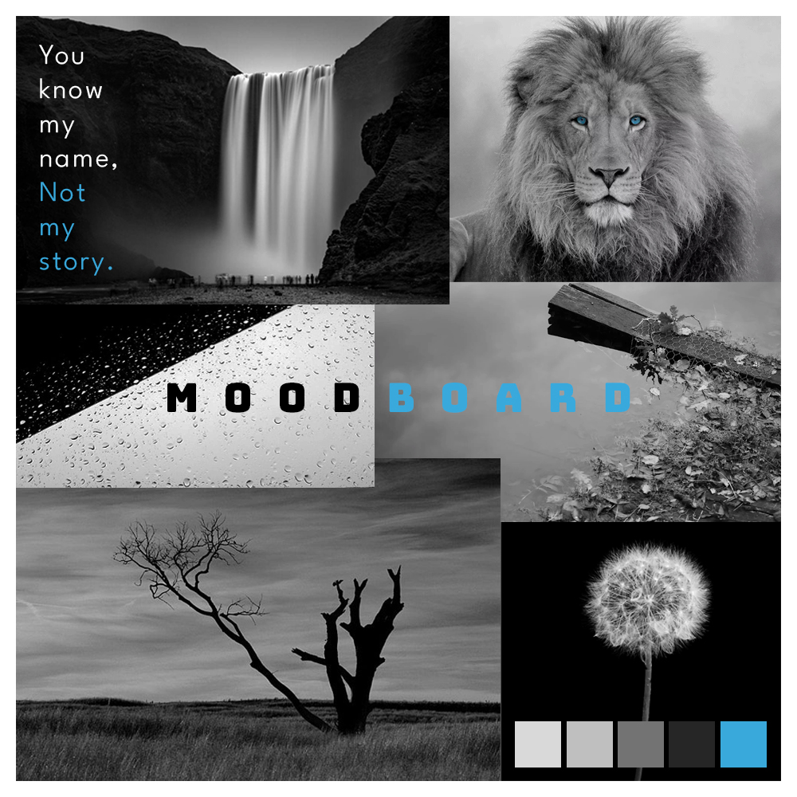

My last Projects

Education
143rd Secondary School in Ukraine
(2010 - 2019)
Private School of Technology and Business in Slovakia
(2019 - 2022)
Norwegian Language Course in Norway
(2022 - 2024)
Secondary School of IT and Media in Norway
(2024 - Present)